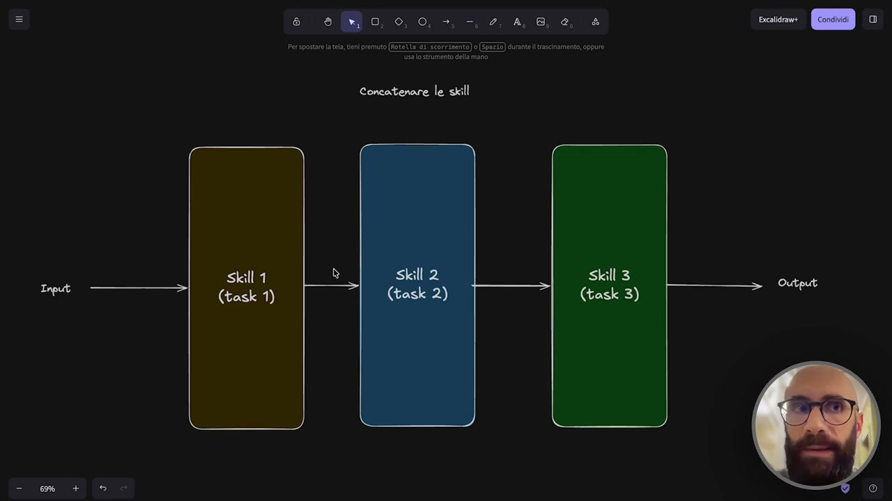
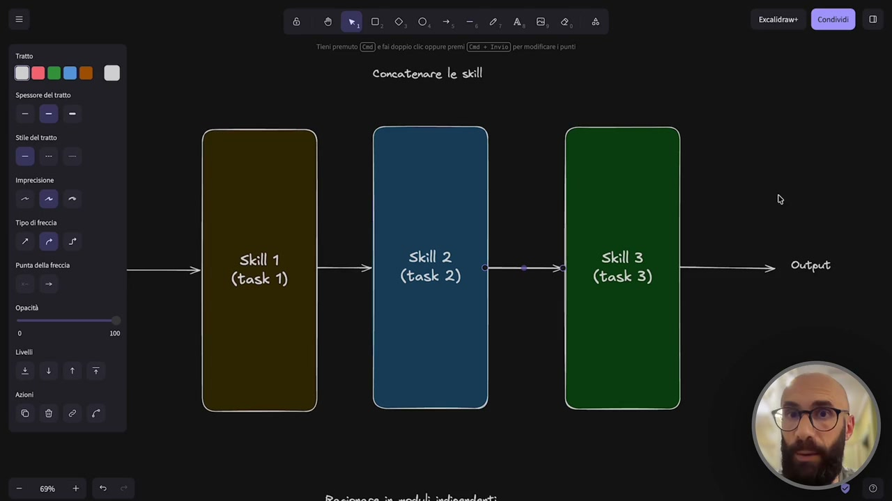
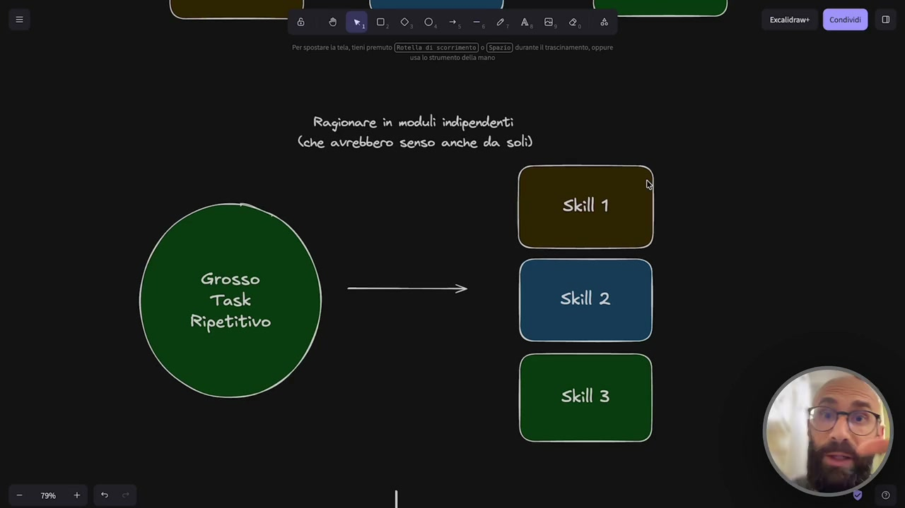
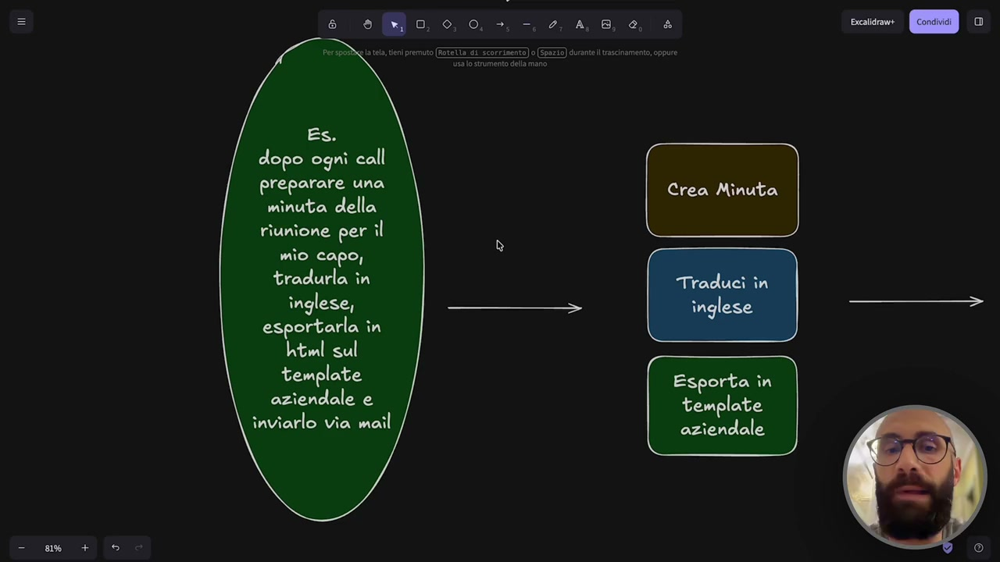
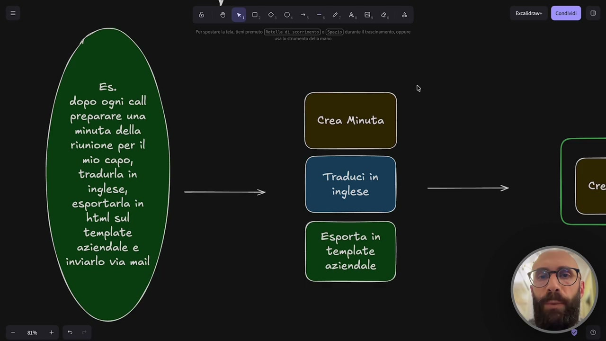
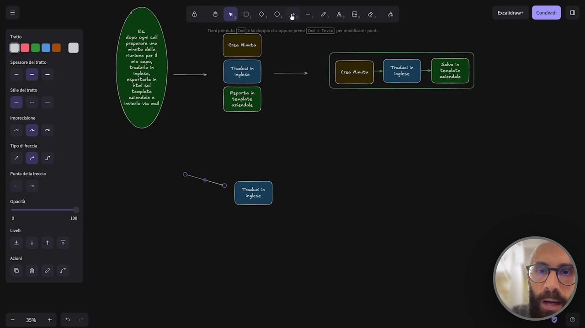
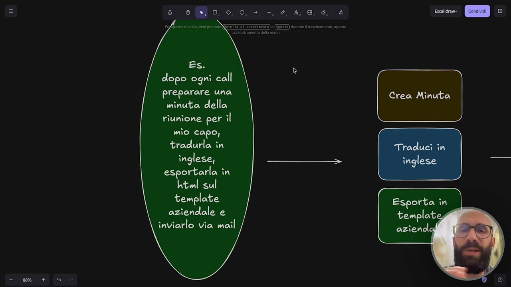
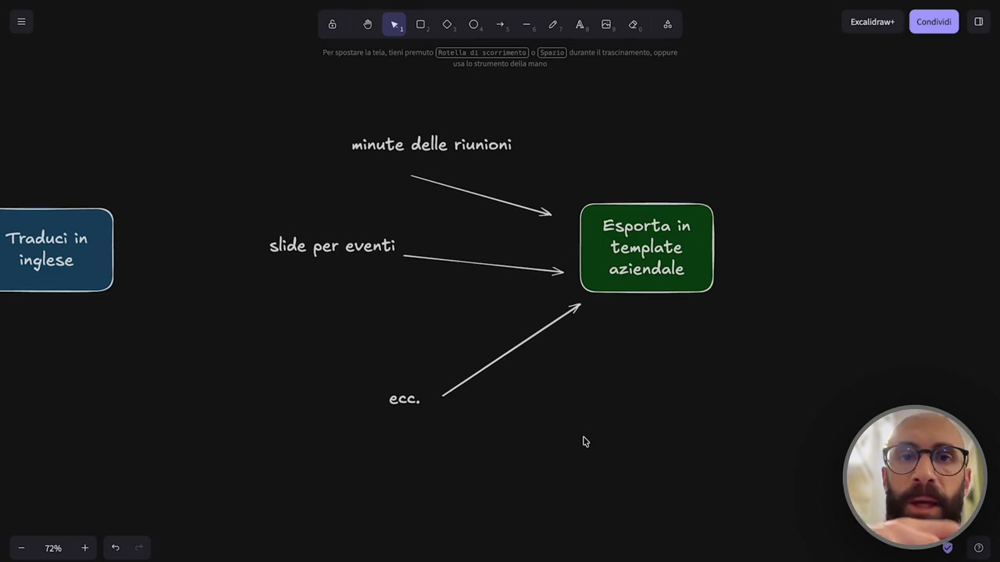
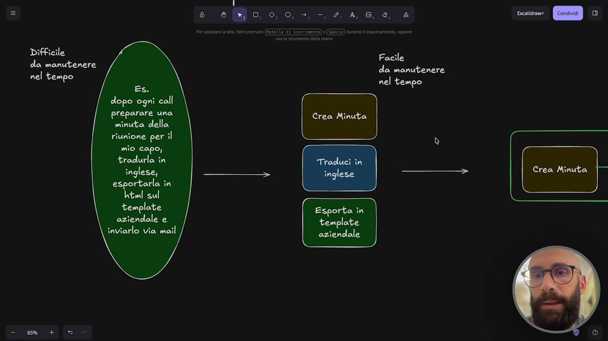

OCR: 8 eBo o 0. -.448 9 è erspostre la tl tieni premuto o Ezio) dante i rescinamento oppure usalo strumento dell mano Concatenare le skill Skill 3 (task 3) Skill 1 (task 1)
Quando lavoriamo con le skill, dobbiamo tenere in mente un concetto molto semplice, ma molto potente, che vedo sfruttato troppo poco. Cioè il fatto che le skill possono essere concatenate. Noi possiamo chiamare una skill, invocarla. Abbiamo visto, scriviamo slash il nome della skill e la facciamo partire. Quindi Cloud Code parte con l'esecuzione di quello che gli abbiamo chiesto. Abbiamo anche visto che può capire da quello che scriviamo che deve invocare una certa skill, anche se non mettiamo il comando esplicito e la fa partire. E soprattutto questa seconda modalità, il fatto che possiamo scrivere del testo e lui intuisce che a quel testo è collegata una skill, rende molto potente l'idea di concatenare le skill. Cosa significa? Noi siamo abituati a vedere la skill come questo blocco, che è questo monolite, dove entra qualcosa, esce qualcosa. Quindi piglia in input un documento, un testo, qualcosa dal contesto, qualcosa che abbiamo scritto noi nella chat,

OCR: e 0MBo oo. 24,80, 4 er spostare tl, en) premuto 0 Ea) dante i trascinamento oppure usalo strumento della mano. Concatenare le skill Skill 3 (task 3) Skill 1 (task 1)
oppure a volte non piglia niente perché è una skill che lavora in autonomia e ci produce un output. Quindi ci scrive qualcosa, ci crea un file, ci crea una serie di file, interviene sul nostro workspace e così via. Ecco, ragionate in quest'ottica di poterle concatenare. Cioè quello che diventa l'output della prima skill può diventare l'input della seconda skill. E quello che fa poi la seconda skill, una volta che l'ha elaborato, può diventare l'output della seconda skill, diventa l'input di una terza skill e così via. E quindi produciamo un output finale che ha passato n skill per arrivare a quel risultato. Questa roba qua è un'altra di quelle funzionalità che ci permette di estendere il nostro agente, il nostro sistema intelligente che ci stiamo creando, praticamente all'infinito. Perché? Perché possiamo fare questa cosa di mettere più skill una in serie all'altra e far sì che diamo un comando, questa prima skill parte con qualcosa, prende quella roba, la elabora, la passa a una seconda, che la elabora, che la passa a una terza e così via.

OCR: (°) Skill 1 (task 1) eo oo, 8 Treni premuto (Ed) ea doppo ci oppure premi (Tad 3-Tnv15) per modificare punt Concatenare le skill
Questa cosa ha una diretta conseguenza e cioè dobbiamo iniziare a ragionare in termini di moduli. Spesso vedo la tendenza a creare delle skill come questi grossi contenitori che devono fare tante cose. E secondo me quello è l'approccio sbagliato. Io vi consiglio di fare il contrario, di prendere la skill e renderla quanto più minimale possibile, cioè fargli fare il task minimo che può eseguire. Perché? Perché dopo andiamo a sfruttare la concatenazione. Ho fatto questo piccolo schenino, diciamo, riassuntivo, dopo vi faccio anche un esempio, che spiega bene la cosa. Se voi avete un grosso task ripetitivo, cioè una cosa che vi trovate a fare tutti i giorni, tutte le mattine, tutte le sere, quando finite di lavorare, oppure dopo ogni call, dopo ogni riunione, dopo ogni intervista con un cliente, che ne so, dopo ogni fiera, tutti i venerdì, quello che volete voi, avete questo grosso task, avete capito che l'ideale è utilizzare Cloud Code per automatizzarlo o semi-automatizzarlo,

OCR: Ragionare în moduli inclipendeniti Che avrebbero senso anche da soli) Skill 1 Grosso Task Ripetitivo Skill 3
non pensate subito di trasformare il task in una skill unica, ma pensate a come la posso spezzettare. Perciò vi dico qua, ragionate in moduli indipendenti, no? Indipendenti, quella parolina chiave, che avrebbero senso anche da soli. Cioè, se io prendo questa cosa, la scorporo e la faccio in n pezzettini, quindi faccio questi tre pezzettini, questi pezzettini hanno senso anche da soli? Se la risposta è sì, allora quella potrebbe diventare una skill. Vediamo un esempio, cosa intendo dire. Immaginate che ci sia questo scenario, no? Un scenario abbastanza realistico, che magari capita a qualcuno di voi. Dopo ogni call devo preparare una minuta della riunione, quindi un riassunto, chiamatelo come volete, un documento, un report, della riunione per il mio capo. Magari si deve tradurre in inglese, per qualche motivo, che ne so, perché abbiamo dei clienti fuori dall'Italia, perché abbiamo due sedi e così via. E poi la devo esportare magari in un formato particolare, perché non mi va bene il markdown, il mio capo la vuole in html, in pdf, in word, quello che volete voi.

OCR: I) dopo ognì call preparare una minuta della riunione per il mio capo, tradurla în inglese, esportarla în html sul template aziendale e inviarlo via mail Crea Minuta Esporta în template aziendale
Lo devo mettere dentro il template aziendale e poi glielo devo mandare via mail. Quello che farebbe una persona, diciamo, poco pratica di cloud code, in generale diciamo poco abituata all'idea di ragionare in termini di skill, magari farebbe una skill con tutta questa roba qua dentro. Si metterebbe lì e con le tecniche che abbiamo visto si scrive questa skill enorme, che magari la skill funziona in questo modo. Io ti passo la trascrizione completa della riunione, quindi proprio il transcript con il testo, chi ha detto cosa. Tu traducimelo in inglese, mettimelo dentro il, no, prima fammi la minuta, quindi riassumimelo, mettimelo poi in inglese e poi dopo impostalo dentro un template aziendale. Quindi farebbe tutto all'interno di una sola skill. Quello che invece vi consiglio io è di ragionare in questo modo. Vedete questo lavoro che vi dicevo qua? No, spezzettate. Cioè, creare una minuta è un'attività? Sì, può funzionare pure da solo. Perfetto.

OCR: tI] Es. dopo ogni call preparare una minuta della riunione per il mio capo, tradurla in inglese, esportarla în html sul template aziendale e inviarlo via mail Crea Minuta Esporta în template aziendale
Tradurre in inglese è un task? Sì, allora può funzionare pure da solo. Esportare un template aziendale ha senso come attività da solo? Vi ricordate qua cosa ho scritto? Che avrebbero senso anche da soli. Se la risposta è sì a queste cose, allora io me li separo. Cosa faccio? Dopo, semplicemente, li faccio lavorare in serie. Cioè, sfrutto questa grande potenzialità del fatto di poterle concatenare e non mi faccio una skill monoblocco con dentro un casino di roba lunghissima, difficile da mantenere nel tempo e così via. Me le faccio piccoline e dopo le concateno. Dopo, quando ho un task, partirà la skill che crea la minuta, che prende l'output, lo passa alla skill che traduce in inglese, che prende l'output e lo passa poi alla skill che crea il template aziendale. Perché questa cosa è utile? Perché vi faccio vedere, facciamoci un esempio. Perché una volta che ho la skill di tradurre in inglese, è vero che io come primo utilizzo di questa skill, cosa ho fatto qua? Mettiamoci il testo. Voglio tradurre, che ne so, le minute aziendali.

OCR: e 0 Ro, 0, 0, g. -. 2, 4,8, 0, è scalda» CB © © 8 SC
Aspettate che zoom un pochino se non si vede niente, no? Voglio tradurre le minuti aziendali. Minute delle riunioni. Ok, questi sono un po' più grandi, se non si legge niente. Uno dice, beh Raff, ma io effettivamente a me serve tradurre le minuti delle riunioni. Sì, ma se tu ti fai questa skill genetica, magari fra cinque giorni ti rendi conto che tu devi tradurre anche i preventivi. E quindi non vai a farti un'altra skill. Hai una skill generica abbastanza che semplicemente prende dell'input e poi ti fa dell'output. Quindi questo lo farebbe per i preventivi. E magari dopo un mese tu ti rendi conto che devi farlo anche per, che ne so, i post-linkedin. Questi sono tre esempi ovviamente fatti al volo. Oh, mi raccomando, questa cosa io la ripeto sempre. Qualcuno magari si scoccerà anche di sentirmelo dire, non è che guardate questo esempio e dite, vabbò ma io non devo fare traduzioni in inglese perché non mi serve, vabbò ma io non le faccio le minuti delle cose.

OCR: dopo ognì call preparare una minuta della riunione per il mio capo, tradurla în inglese, esportarla în htwl sul template aziendale e inviarlo via mail
Questo vale per tutto. Cioè qua in generale astraete e pensate a un vostro task grosso e fate il lavoro di spezzettamento, immaginarlo come piccoli moduli indipendenti, perché? Perché questi moduli poi potrebbero tornare utili altrove. Che ne so, lo stesso con il template aziendale. Cioè se io mi sono fatto questa skill, no? È vero che questa skill nasce, abbiamo detto, perché io la sto utilizzando per le minuti delle riunioni, no? Che gli do un testo e me lo metto dentro il template aziendale. Ma se io nel template aziendale ci devo mettere un'altra cosa, qua abbiamo detto i preventivi post-linkedin, mettiamo che nel template aziendale ci devo mettere, che ne so, le slide per eventi, ok? Perché pure quelle le voglio col template aziendale. Io, stessa cosa, uso la stessa skill che mi sono creato prima. E così via all'infinito. Cioè il concetto che voglio far passare, che dopo la utilizzo quando scriviamo eccetera, ok? Quindi che copriamo tutte le altre casistiche. Quello che voglio far ragionare sul fatto che una volta che ce la siamo creata ed una volta che è abbastanza generica, la possiamo sfruttare n volte.

OCR: minute delle riunioni Esporta în slide per eventi template aziendale ecc. Excalidrawe
E soprattutto, ricordate questo, diciamo qua aggiungiamo un altro appunto, questa roba qua è difficile da manutenere nel tempo, ok? Significa che fare la manutenzione di una roba del genere è difficile. Perché? Perché è un papiello gigante, dentro magari sono 50 righe, 100 righe, dove voi spiegate come deve funzionare la skill, bu bu ba ba, eccetera eccetera. E se cambiate una piccola cosa, dentro quel marasma è difficile da mantenere, da manutenere. Invece questa roba qua è facile da manutenere nel tempo. Perché? Perché sono modulari. Perché magari crea minuta non lo toccate mai, perché magari traduce in inglese non lo toccate mai, ma un giorno viene fatta una piccola modifica al template aziendale, allora voi andate lì dentro, in quella singola skill, cambiate la riga 32, il logo o il colore del vostro brand e l'avete diciamo aggiornata.

OCR: Difficile da manutenere nel tempo Es. dopo ogni call reparare una (a della rîunione per il mio capo, tradurla în inglese, esportarla în html sul template aziendale e inviarlo via mail Crea Minuta Esporta în template aziendale Facile da manutenere nel tempo Crea Minuta
Questo vi permette di avere un sistema molto più estendibile, potenzialmente all'infinito, molto più facile da mantenere nel tempo e anche più facile da condividere. Immaginate che questa skill la dovete poi dare a un vostro collaboratore, a un collega, a un cliente, a un dipendente, spiegare cosa fa questa skill è un casino, mentre spiegare questa è facilissimo. Voi gli date la skill e dicete guarda questa è la nostra skill del template aziendale, deve usare questa perché è standard, la utilizziamo tutti quanti. Quindi se tu usi questa skill viene sempre esportato nel formato corretto del nostro template. Mi raccomando utilizzate questo approccio quando create le skill da oggi in poi.